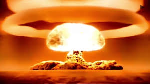

|
|
|---|
Welcome to the explosive weapons section of this glorious website. |
|---|
|
1: Tsar Bomba The tsar Bomba, with a 50 megaton yield, was (and is) the most powerful nuclear weapon ever created. This was a scaled-down, test version. In theory, the Soviets could have made a 100 megaton bomb. 50, however, was plenty. Wikipedia |
|  |